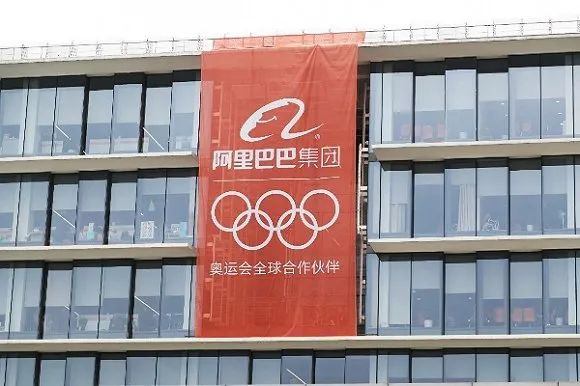
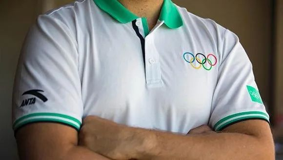
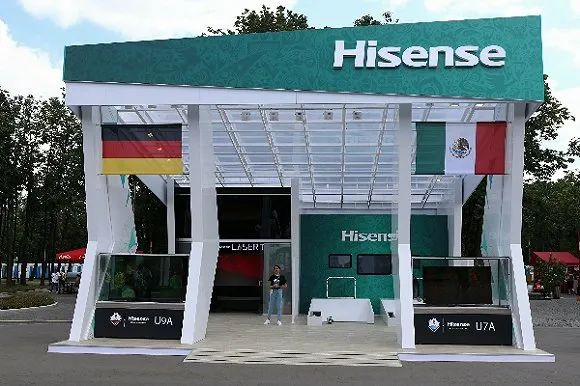

东京奥运会因疫情延期史上首次，日本政府已投入126亿美元
原文链接 备份链接 国际奥委会关注的核心问题 首先是运动员的健康 其次是商业因素 央视客户端消息称，据《今日美国》报道，据资深国际奥委会委员迪克·庞德当地时间23日透露，2020年东京奥运会将推迟至2021年，而有关细节将在未来四周内 …

图片来源：视觉中国
记者：罗盈盈 马越
“
企业们留给体育行业的营销预算正在减少。
”
新冠疫情全球大流行，2020年3月24日，体育届最大的一只“靴子”终于落地。
在经过一个多月的争论之后，国际奥委会宣布与东京奥组委达成共识，东京奥运会延期至2021年举办，最迟不晚于2021年夏天。
在此之前，本应在2020年这个体育“大赛年”进行的欧洲杯、美洲杯等大型洲际赛事已决定延期至明年，而各大职业联赛的恢复前景更是悬而未决。
随着全球规模最大的奥运会有了定论，国际体坛正式进入一段空窗期。
IP赛事是体育产业运转的引擎，这一环节停转，整个产业就会失去核心动力。积累多年热度的体育营销行业，正在随之陷入停摆状态。
 图片来源：视觉中国
图片来源：视觉中国
奥运赞助商被按“暂停键”
尽管年轻人对奥运会的热情似乎有衰退趋势，但商业世界依然用一份份赞助合约证明着奥运会的价值。
东京奥运会的赞助商体系分为四级，最高级别是国际奥委会全球合作伙伴（TOP）计划，支持2020年东京奥运会的TOP赞助商包括可口可乐、爱彼迎以及中国巨头企业阿里巴巴等14家国际企业。
除了国际奥委会TOP全球合作伙伴以外，东京奥组委的本土赞助分为三个等级，分别是顶级黄金合作伙伴、官方合作伙伴和官方支持商。
本届奥运会，总计63家本土赞助商为东京带来超过31亿美元的收入，这个数字大约是北京和伦敦奥运会的三倍，是近两届世界杯足球赛的两倍，成为历届奥运之最。
由于为2022年北京本土冬奥会蓄力的缘故，与2018年俄罗斯世界杯相比，中国企业在东京奥运会官方赞助领域的投入并不大。
阿里巴巴是国际奥委会14家全球合作伙伴中唯一的中国企业。
除此之外，安踏体育拥有两项权益——除了中国奥委会官方合作伙伴以外，这家国产运动品牌在2019年10月成为国际奥委会官方体育服装供应商。
图片来源：阿里巴巴
阿里巴巴和国际奥委会在2017年签订的合同长达12年，直至2028年洛杉矶奥运会结束。
根据入选TOP合作伙伴的惯例，阿里巴巴所出的赞助费用不低于8亿美元，折合人民币约50亿元。
在以往的宣传中，阿里巴巴多次强调希望利用云技术，帮助搭建一个数字化的奥运会，同时达到提升国际品牌形象和走向全球化的目标。
2019年底，阿里巴巴公布“2020东京奥运新计划”，协同整个阿里生态体系，打出“要让5亿中国人玩转奥运”的口号。
阿里巴巴首席市场官董本洪表示，阿里对奥运会有一个完整的计划，在4月15日开始倒数100天倒计时开启密集营销。
时趣是阿里巴巴奥运项目的供应商之一，为后者提供东京奥运年期间设计服务项目。
该公司高级副总裁赵赫告诉界面新闻，阿里巴巴从2019年开始就针对奥运营销进行准备，主要是为了服务淘系头部的品牌，力求把权益充分利用，原计划在今年4月开启围绕奥运的营销活动。
赵赫说：“受疫情影响，更早的计划是从3月份开始，但是奥运的情况不明朗，大家之前对于延期已经有了一定的预期，所以我们目前这项工作处于一个暂停状态。”
图片来源：国际奥委会官网
同样被按下暂停键的还有安踏。
身兼中国奥委会合作伙伴和国际奥委会体育服装供应商两大官方身份，安踏体育早早为东京奥运会准备好一整套的营销方案。
安踏集团总裁郑捷在接受界面新闻采访时透露：“我们相信这套营销方案会非常有效，带来比较振奋的认知，不仅仅是做线上推广，更重要的是有一整套产品组合，匹配到奥运的概念，可以给到市场一个耳目一新的感觉。”
但现在，这份看似让安踏信心满满的奥运答卷，已经无法在今年如期公布于世。郑捷表示，若奥运延期，整个营销方案只能延迟。
除此之外，多位营销行业人士告诉界面新闻，业内之前对于奥运会的延期已经有了一定预期。
事实上，奥运赞助商的相关项目从2019年就已开始准备，相关的物料拍摄活动直到奥运延期晚间官宣前的3月24日白天还在进行中。最终，体育营销还得进行，只是传播角度必须进行调整。
尽管阿里巴巴和安踏今年最重要的营销计划被打乱，但业内人士认为，这些签约多年周期的奥运赞助商受伤不会太重。
体育营销机构华恒博睿副总经理刘文娣在接受界面新闻采访时表示，做体育营销的企业主要有两类，一类是和体育IP签下多年的合作，赛事暂停对他们产生部分影响，但不会影响长期的合作，更多是权益延期或调整。
刘文娣说：“第二类是专门选四年一次的奥运会做奥运营销的企业，对于这些企业影响就很大，如果奥运不能按计划举行，对于他们的营销周期和结果会产生重大影响，那么他们就很可能选择体育之外的营销资源。”
对于正式进入赞助商体系的企业，奥运延期带来的影响并不是毁灭性的，因为通常来说会有一些权益上的调整。
据新浪体育引援知情人士的消息称，东京奥运会的延期对于阿里巴巴来说，损失的也许只是在东京事先打好的前站租金和一些宣传物料。
除此之外，据刘文娣所知，企业签约运动队时一般合同条款会界定，如果因为不可抗力导致赛事延期或不举办的话，双方需要重新谈条款。
事实上，几乎所有的赞助商签约都不会一次性付款，会划分几个周期，以保障商业权益。
一位业内人士告诉界面新闻，“合同一般有条款，像某汽车品牌赞助赛事的时候，合同里面规定三个周期不同档次的费用，比如说500万、300万、100万，视最终的完成效果来确定款项。”
尽管赞助商的节奏被打乱，但外界关于百亿赞助费“打水漂”的说法，或许过于哗众取宠。
 上半年，国内多达50多场马拉松赛事受影响。图片来源：视觉中国
上半年，国内多达50多场马拉松赛事受影响。图片来源：视觉中国
企业体育营销预算减半
相较之下，一些中小型规模的体育营销活动遭受的打击更大。
每年春秋季节，本应是体育赛事公司迎来一年里最忙碌的时间，但刚刚到来的春天，赛事公司面对的是上半年无赛可办的情景。
据智联招聘近日发布的数据，从国内的复工情况来看，娱乐和体育行业遭受冲击最为严重，未复工比例接近70%。
从3月中旬开始，全球大型体育赛事相继宣布停摆，中国则更早对体育赛事日程进行调整——今年2月，国家体育总局经济司副司长彭维勇称疫情对体育行业产生冲击。
CBA和中超等职业联赛纷纷按下“暂停键”，国内大大小小的赛事全部停摆，马拉松等群体赛事也陷入停滞状态，各类赛事以取消、延期或改址等举措来应对疫情。上半年，国内多达50多场马拉松赛事受影响。
目前来看，上半年，国内体坛将持续空窗状态。
国内一家大型体育赛事公司的员工向界面新闻透露，其销售团队处于暂停工作的状态，“疫情爆发后，赛事不得不延期，早前谈好初步合作意向的赞助商都暂停签约，都在观望，至少等赛事日期确定才能重启商谈。”
与此同时，体育营销机构华恒博睿副总经理刘文娣表示，疫情发生后，各大企业的营销预算均有所缩减，在该机构接触的企业客户中，预算缩减幅度最大的达到50%。
“今年的实际情况是，除了个别行业，大多数行业企业的营销预算都有较大幅度缩减，保留的预算会更多集中在帮助品牌迅速变现的媒介和渠道中，留给体育的数额会比较少，”刘文娣说道。
大量赛事取消或延期，赛期存在不确定性，是体育营销行业进入冷冻期的主要原因。
除此之外，疫情之下，全球经济环境遭受沉重打击。业绩不景气、利润下滑，很可能成为企业减少体育营销投入的另一因素。
运动用品行业与体育营销的关系最为紧密。
以国际巨头耐克和国产头牌安踏为例——受疫情影响，安踏品牌一季度的业务受损程度达到20%-25%；截至今年2月底的财季，耐克净利润同比下降23%，大中华区营收下降4%，连续22季两位数增长的纪录终止。
安踏集团总裁郑捷认为，在疫情发展存在不确定性的情况下，安踏今年最重要的营销活动包括疯篮球联赛和球星中国行将受影响，预计到六七月份也难以恢复一些品牌推广活动。
对于企业而言，预算更多会集中在帮助品牌迅速变现的业务上。安踏方面亦表示，今年的核心是紧紧围绕产品本身，专注于商品IP的打造和商品本身的推广。
3月16日，市场调查机构eMarketer发布一份报告称，疫情将导致2020年全球广告支出缩减203亿美元。
 图片来源：视觉中国
图片来源：视觉中国
从目前体育赛事的延期计划来看，业内预期，国内最快下半年恢复部分赛事。
但举办比赛涉及到赞助商的意愿，企业是否有大额经费计划投入赛事层面，从各个角度来看，冰冻期的长度将难以预料。
赵赫说道：“对于营销人员来说，现实的状况确实挺难的，全球从事体育营销的人可能比得了肺炎还憋气——因为最大的恐惧来自于未知，你不知道这件事情后续会怎样。”
据刘文娣透露，今年7月的环青海湖国际公路自行车赛，很可能是国内恢复的第一个大型赛事，在商业层面，冠名商和汽车类别赞助商都已经基本敲定。
业内有一种观点认为，在今年体育资源稀缺的情况下，这些知名赛事的招商能力将不减反增。
体育营销还要做吗？
体育大年患上“流感”，押注体育营销的外延行业也要跟着打喷嚏。
传统家电行业一直是体育营销的常客。
2018年俄罗斯世界杯让家电行业火了一把，不管是海信电视的球场广告，还是“法国队夺冠、华帝退全款”的营销活动，一时间都让企业成为行业焦点。
俄罗斯世界杯官方赞助商海信。图片来源：视觉中国
除此之外，海信是2020年足球欧洲杯的赞助商，TCL曾是2019年美洲杯的官方合作伙伴，目前依然是巴西队的赞助商。
创维、长虹等家电企业都纷纷试图通过签约体育赛事、球队以及球星的方式打开海外市场。
今年3月，足球欧洲杯和美洲杯已经相继宣布延期，今年无法按期举办赛事，对于相关赞助商而言是一次重大的业务冲击。
据《华夏时报》报道，中国电子视像行业协会副秘书长董敏表示，“原来我们判断今年的体育营销预期会为电视行业带来300万台增量，为空调行业带来150万台增量，但现在直接落空了。”
中怡康大家电事业群总经理彭显东也认为今年会遭受重创，在欧美市场，体育赛事对电视机的销售促进作用明显，“本来海外市场部分，无论海外企业还是中国企业，大家都准备围绕体育赛事做大的计划，但现在这个计划受阻。”
借势体育的综艺和影视行业亦难逃冲击。
向来对市场反应迅速的文娱行业，早早开始进行布局，抢占体育题材的流量红利。
根据公众号“营销娱子酱”的统计数据，2020年视频网站和卫视公布的综艺片单中，体育竞技题材节目多达有16个，其中《挑战吧！奥林匹克》、《VS冠军》、《中国冠军》都是借势奥运的项目。
此外，以中国女排为内容的电影《夺冠》之前同样看上奥运年的时机。
按照原计划，这些剧集和综艺大部分在今年夏季播出，制作商希望，伴随着中国队在奥运会的表现，节目将在话题上得到流量保障。
当前，随着奥运会等体育赛事生变，文娱行业在招商领域将失去一个最重要的卖点。
据爱奇艺内部人士向搜狐科技透露，爱奇艺与蓝天下联合制作的奥运年挑战秀《我们是冠军》或遭遇停拍，官方信息显示，该综艺涉及到的艺人嘉宾有陈飞宇、黄明昊，停拍带来的具体损失不详。
奥运年挑战秀《我们是冠军》或遭停拍
面对目前的情况，业内人士认为，体育营销行业只是暂时受挫。
曾任NBA全球营销伙伴关系执行副总裁，现为体育经纪公司Excel Sports首席商务官的埃米利奥·科林斯（Emilio Collins）认为，“尽管体育营销业务遭受到不可避免的打击，但是体育仍然是一个强大的统一体。”
由于体育拥有知名度、美誉度和品牌忠诚度，并且曝光度高和形象健康良好，未来依然拥有长期投资的价值。
“今年疫情影响导致奥运延期，很多企业在考虑还要不要做体育营销，在我看来做肯定还是要做，”赵赫说道，“品牌不一定要等到奥运开幕做营销才能产生效果，在奥运之前的时间，如果能选择一些很好的素材去结合，一样可以起到很好的效果。”
他认为，品牌如果预算充足，可以购买媒介资源做更大的曝光，否则可以考虑一些成本低、执行灵活的社会热点营销。
值得注意的是，在全球赛事停摆的情况下，不少联盟或俱乐部已经开展线上活动——球星化身游戏玩家主播，英乙莱顿东方发起FIFA线上挑战赛，国际足联和EA Sports举办官方电竞赛事。
近年来，这些线上虚拟环境，正在复制体育营销产业的商业足迹。
俄罗斯世界杯期间，可口可乐曾“赞助”一位名叫Alex Hunter的虚拟球员，在游戏的世界里，Hunter还参与一个可口可乐的主题广告。
此外，必胜客还成为电竞赛事Madden NFL 20虚拟体育场的冠名赞助商。
数字产业的发展，为版权所有者和赞助品牌创造了更多可能性，也许能成为特殊时期体育行业的新焦点。
未经授权 禁止转载

原文链接 备份链接 国际奥委会关注的核心问题 首先是运动员的健康 其次是商业因素 央视客户端消息称，据《今日美国》报道，据资深国际奥委会委员迪克·庞德当地时间23日透露，2020年东京奥运会将推迟至2021年，而有关细节将在未来四周内 …
原文链接 备份链接 2020年本可以成为国际体坛“最好的时代”。但随着新冠疫情在全球肆虐，国际体坛或将迎来“最坏的时代”。 近日，NBA、F1、欧洲杯、欧洲足坛五大联赛纷纷按下“暂停键”，全球瞩目的2020年东京奥运会或将面临“难产”。 …
原文链接 备份链接 因为新冠疫情带来的不确定性，让企业对于营销支出和赞助奥运持观望态度。这种不确定性已经从奥运经济主动脉向外扩散，今年东京奥运会可能因此承受罕见的商业压力 文 |《财经》记者 王晓枫 编辑 | 郝洲 日本东京正全力为举办 …
原文链接 备份链接 图片来源：视觉中国 记者：罗盈盈 “ 日本政府和东京奥组委依然致力于让奥运会如期举行。 ” 受全球疫情影响，东京奥运会能否如期举办的悬念仍在持续。 3月3日，据英国《每日邮报》报道，日本奥运大臣桥本圣子在回答一名议员关 …
原文链接 备份链接 来源：财联社 作者：史正丞 “ 据媒体报道，国际奥委会对于历届主办城市的投资大约在10亿美元上下，为此向保险公司投保约8亿美元保额，按照2-3%的保费来计算，IOC为东京奥运支付的保险费用最多不超过2400万美元。 ” …